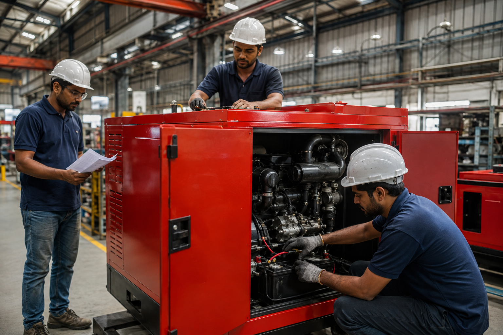

Manufacturing & quality checks
F.C. DOD's machinery and generator work.
Generator and chaff-cutter production, product use and customer updates.
Home / Gallery

F.C. DOD's machinery and generator work.

Fodder-preparation machinery for dairy and livestock operations.
For current product information, call +91 92163 62163.